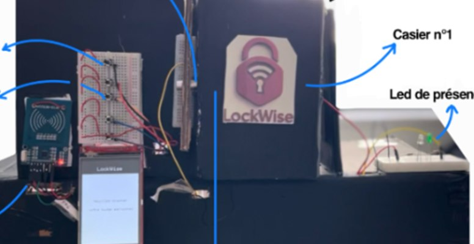
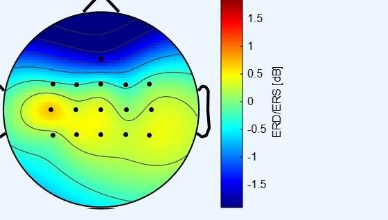
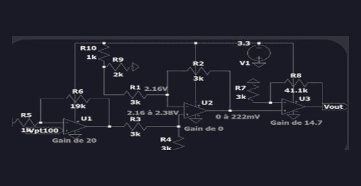
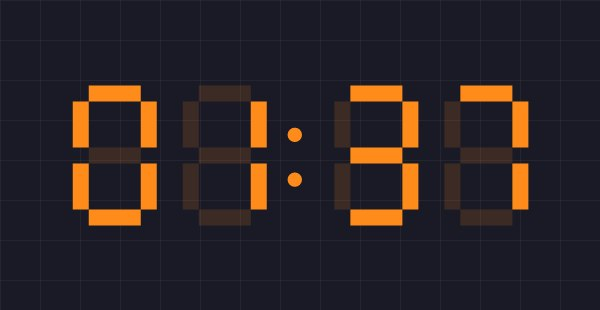

// Système embarquéÉquipe de 7
LockWise
Casier sécurisé à badge RFID pour la gestion des clés. Architecture STM32 + Raspberry Pi.
Voir le projet →Ingénieur CPE Lyon - du capteur à l'IA
Ingénieur formé à CPE Lyon, à l'intersection du logiciel embarqué, de l'intelligence artificielle et du matériel. Sept projets, cinq domaines différents : je progresse en changeant de terrain plutôt qu'en creusant un seul sillon.
Spécialisation robotique de service à CPE Lyon, approfondie par un échange à l'Università di Padova en neurorobotique et robotique intelligente.
Coordinateur technique systèmes à la RATP sur l'implémentation du MF19 - signalisation, traction, systèmes critiques en exploitation.
Sept projets menés du capteur à l'IA : navigation et manipulation sous ROS 2, décodage de signaux cérébraux, systèmes embarqués, électronique analogique et numérique. Une même logique à chaque fois : comprendre la chaîne complète avant de l'optimiser.
Du capteur à l'IA, je conçois des robots qui agissent dans le monde réel.

Casier sécurisé à badge RFID pour la gestion des clés. Architecture STM32 + Raspberry Pi.
Voir le projet →
Reconnaître une intention de mouvement dans le signal EEG, et la transformer en commande fiable.
Voir le projet →Navigation autonome guidée par AprilTag, évitement d'obstacles et détection de tables au LiDAR.
Voir le projet →Bras industriel qui intervertit deux cubes repérés par vision, sans emplacement tampon.
Voir le projet →Robot créateur de brochettes de bonbons à commande vocale, piloté par LLM.
Voir le projet →
Mesure de température, de concentration et de volume en analogique, pour doser une boisson.
Voir le projet →
Chronomètre et compteur de score décrits en VHDL, implémentés sur carte FPGA.
Voir le projet →Coordination de l'implémentation du MF19 au sein de l'équipe RMOE. Périmètre systèmes : signalisation, traction, interfaces voie/GC, et coordination avec les exploitants de maintenance et de service.
Électronique, systèmes embarqués, robotique et IA appliquée. N'hésitez pas à me contacter pour échanger sur un projet ou une collaboration.